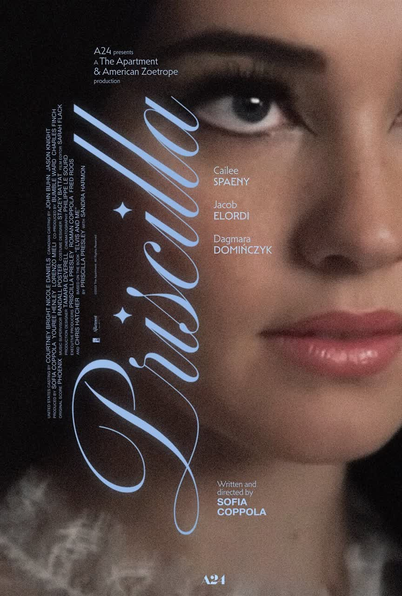
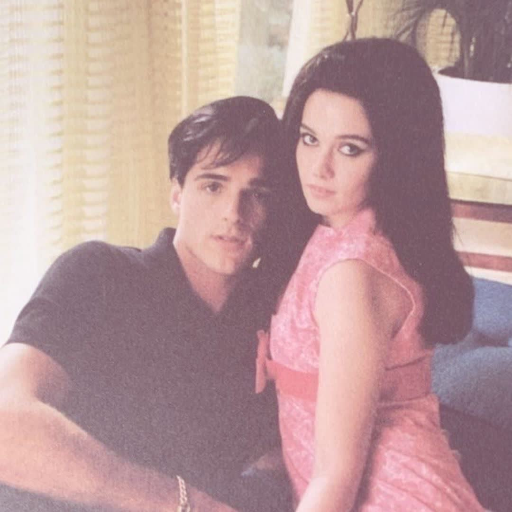
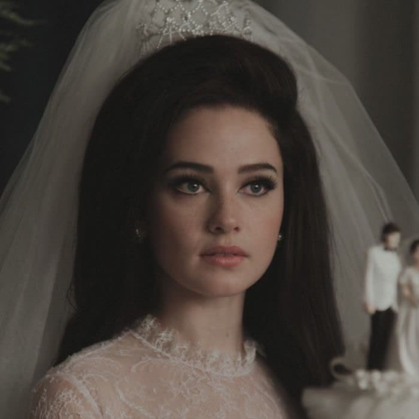

Priscilla is a 2023 American biographical drama film written, directed, and produced by Sofia Coppola, based on the 1985 memoir Elvis and Me by Priscilla Presley (who serves as an executive producer) and Sandra Harmon. It follows the life of Priscilla (Cailee Spaeny) and her complicated romantic relationship with Elvis Presley (Jacob Elordi).
──────────────────────────────── ୨୧────────────────────────────────
Priscilla premiered at the 80th Venice International Film Festival on September 4, 2023, where Spaeny won the Volpi Cup for Best Actress. It was released in the United States by A24 in select theaters on October 27, 2023, before expanding wide on November 3, 2023. It received positive reviews from critics and grossed $33 million worldwide. In addition to her award from Venice, Spaeny received a Best Actress nomination at the Golden Globe Awards for her performance.
Cast:
- Cailee Spaeny as Priscilla Presley
- Jacob Elordi as Elvis Presley
- Ari Cohen as Paul Beaulieu, Priscilla's stepfather
- Dagmara Domińczyk as Ann Beaulieu, Priscilla's mother
- Tim Post as Vernon Presley, Elvis' father[
- Lynne Griffin as Grandma "Dodger", Elvis' grandmother
About:
Two months before 24-year-old singer Elvis Presley is discharged from the U.S. military and leaves West Germany, he meets 14-year-old Priscilla Beaulieu at a party. She resides with her parents in Bad Nauheim, where her father is also in the army. Elvis, who was drafted in 1958, at the peak of his fame, quickly shows interest in Priscilla, and they start dating casually..,For more
Facts:

♡The film is based on the memoir "Elvis and Me."
♡The film does not use Elvis's original songs.
♡Jacob Elordi was filming Saltburn at the same time.
♡Cailee Spaeny won Best Actress at Venice.
♡Priscilla Presley cried at the film's premiere.
♡Jacob Elordi covered his hotel room with photos of Elvis and Priscilla.
